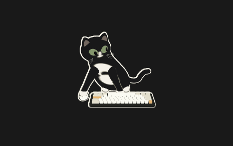
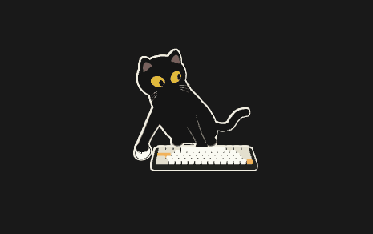
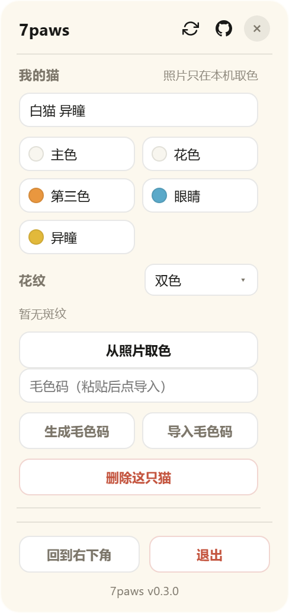
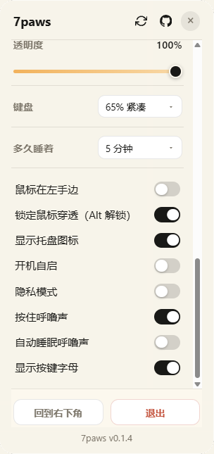
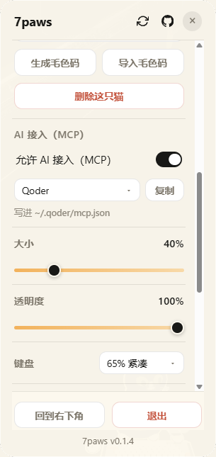

全局键鼠响应
按键、鼠标点击与滚轮都会得到回应；内置 MCP 读取工具可查询应用状态。
全局键鼠响应的 3D 桌面小猫桌宠：摸头呼噜、陪你打字、玩鼠标，会按你的照片生成专属配色，也能通过 AI（MCP）查询状态。本分支在跟进上游之外补充了健壮性加固与新功能。


实际运行画面：大咪 / 面面 · 毛色均可在「我的猫」里自定义
从全局输入响应到专属猫咪定制，一只安静陪伴、也不打扰工作的桌宠。
按键、鼠标点击与滚轮都会得到回应；内置 MCP 读取工具可查询应用状态。
透明区域不挡桌面操作，需要时一键锁定整窗穿透，按住 Alt 临时恢复鼠标操作。
按住猫头触发呼噜；呼噜开关独立控制是否发声，睡眠或锁定时自动静音。
13 种内置毛色，支持照片取色、AI 建议与十六进制色槽，左右眼可配异瞳，多只命名切换。
短暂无操作后随机舔爪、舔毛、揣手手或蜷缩，一有输入立刻恢复，可在设置里关闭。
托盘菜单一键让小猫小憩或唤醒；状态气泡实时显示它正在做什么（默认开启）。



相对上游 v0.4.1，这个由 ElvisLoo 维护的分支在跟进上游功能之外补充了以下增强，完整记录见仓库 CHANGELOG。
配置原子写入与损坏隔离、写盘失败上报、缩短持锁、MCP 批处理与请求上限、CI 增加 cargo test 与前端用例。
把渲染器早已实现却未接线的 fastForwardToSleep 纳入正式契约自检，托盘一键让小猫入睡或醒来。
小猫头顶显示当前状态与正在做的动作，文案变化才刷新，Win7 兼容模式自动停用，可在设置里关闭。
统一四处版本号并打通 tag 触发的自动构建发布，产物附 SHA256SUMS 校验文件。
Windows 10/11 x64 与 ARM64 安装包及便携版，均附 SHA256SUMS 校验文件。
x64 与 ARM64 正式支持，包括 NSIS 安装版与便携版。
非官方兼容便携版，内置 WebView2 109 固定运行时，解压即用。
macOS / Linux 请使用上游原版 7wdn/7paws；Windows 8 未支持，本分支只专注 Windows 10/11。
默认不需要管理员权限；开启「默认以管理员身份运行」后，下次启动按需请求 UAC，用于全屏游戏置顶守卫。